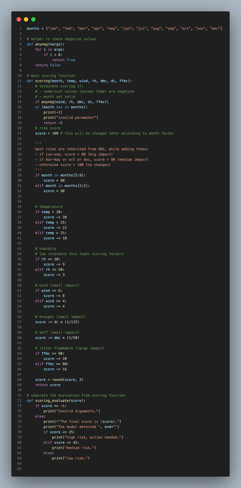
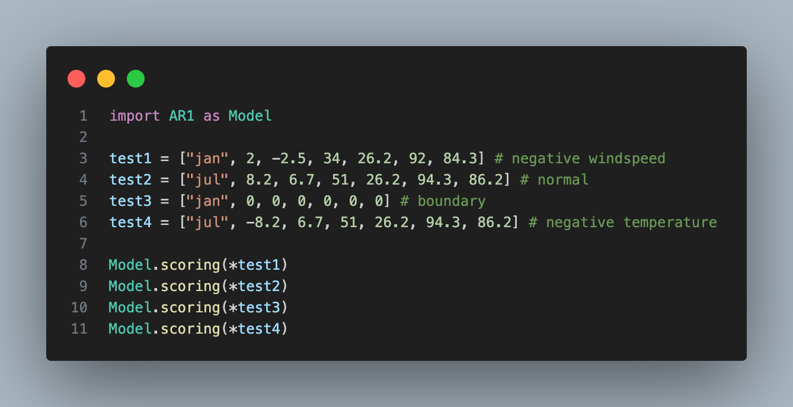
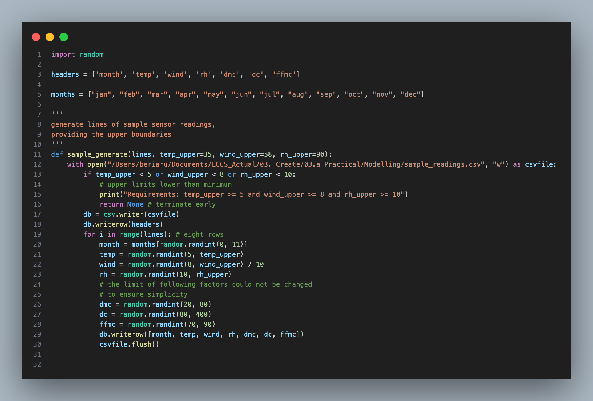
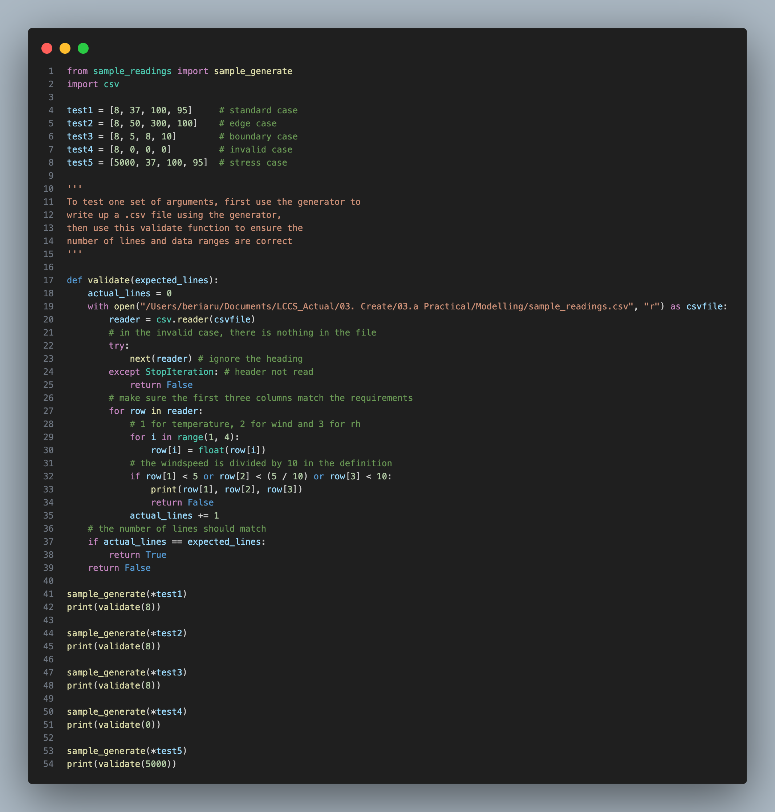

I specified the details for each step and reviewed the outcomes at the end.
Detail
I began to code the micro: bit without using any sensors.
Outcome
The embedded system can now score the input after a specific time interval, and alert based on the score.
Detail
I improved the micro: bit code and wrote python code for serial transmission.
Outcome
The embedded system can send the sensor data and calculated score to the computer and store it in a .csv file.
Detail
I cleaned my data prepared for the model, gave a rule to calculate fire risks, and calculated the relationships between the factors and the fire risk.
Outcome
I have the figures to prepare for the rules in my model.
Detail
I created the scoring rules for the model, implemented it, then tested its validity by inputting data from the micro: bit to ensure that the results are evenly distributed.
Outcome
the model can evaluate fire risk in a reasonable way.
Detail
I wrote sample data to adapt the “what-if” conditions and wrote a python program to compare them to the baseline.
Outcome
my model successfully answered the what-if questions in the plan and design stage.
Detail
I wrote a program to generate sample data to simulate regular input entries from sensors.
I then used another program to use the model to visualise how each entry has changed from the previous one.
Outcome
I completed the adaptive feature.
Detail
I filled the placeholders left in step 1 to be sensor data, monitored regularly.
Outcome
the embedded system now fulfils all requirements in my specification.
Detail
I cleaned and commented my python code.
Outcome
the code is now more comprehensible.
Testing
I did white-box testing for two critical parts of my code.
Test 1 – Improved Model (Integration Test)
The scoring function is integrated with the evaluation function. The scoring function takes in several environmental factors and evaluate the score, then the evaluation function outputs the risk level. Several restrictions include:
Considering real-life factors, several parameters should always be positive.
To show the user an error has been made, it will return score of -1 (cannot be achieved in normal conditions) and alert “invalid parameter”.
I intend to test the functionality of the scoring function with error-checking functionalities such as "anyneg()" integrated.
Definitions (AR1.py):

Testing Code (Test_scoring.py):

Test Table:
Description
Data
Expected result
Actual Result
Passed
Negative wind speed
["jan", 2, -2.5, 34, 26.2, 92, 84.3]
Invalid arguments.
Invalid arguments.
Yes
Normal
["jul", 8.2, 6.7, 51, 26.2, 94.3, 86.2]
The final score is 54.722. The model detected low risk.
The final score is 54.722. The model detected low risk.
Yes
Boundary
["jan", 0, 0, 0, 0, 0, 0]
The final score is 91.0. The model detected low risk.
The final score is 91.0. The model detected low risk.
Yes
Negative temperature
["jul", -8.2, 6.7, 51, 26.2, 94.3, 86.2]
The final score is 54.722. The model detected low risk.
The final score is 54.722. The model detected low risk.
Yes
The results are satisfying as the model can now handle different types of inputs and give reasonable responses.
Test 2 – sample data generator (Unit Test)
The sample data generator will take in the lines to be generated and the upper limits of factors temperature, wind and relative humidity. It writes a .csv file containing sample data to be read in AR3.
The generator must handle invalid upper boundaries by refusing to generate and being efficient enough to generate large number of lines.
Definitions (sample_readings.py):

Testing Code (Test_sample_readings.py):

Test Table:
Description
Data
Expected Result
Actual Result
Passed
Normal
[8, 37, 100, 95]
True
True
Yes
Edge
[8, 50, 300, 100]
True
True
Yes
Boundary
[8, 5, 8, 10]
True
True
Yes
Invalid
[8, 0, 0, 0]
False
False
Yes
Stress
[5000, 37, 100, 95]
True
True
Yes
We can see this generator works well under various cases.
Problem Encountered during implementation:
A problem which requires a lot of trial-and-error is cleaning and formatting the serial data from micro: bit. The system relied on serial input to process sensor readings, and incorrect cleaning has led to unusable data and errors.
Incorrect version:
The following code removes all spaces in the string instead of selectively. This causes the different columns to be molded together, causing data destruction. Also, junk characters still exist after cleaning, which suggests the code works differently on different platforms.
Code:
Test Line: ‘b 23 55 219 0 \\r\\n\\n
Output: 23552190\\n
Correct Code:
I identified that the spaces only appear at the first three characters of the source string, so I used list slicing to remove it. Also, as the spaces which separate columns are preserved, I could split the columns by spaces, and assign them to variables. Also, I added a new replacing command that cleaned the “\\n” which occasionally appears at the end of string.
Code:
Test Line: ‘b 23 55 219 0 \\r\\n\\n
Output: 23 55 219 0
Model Explanation:
Purpose
The model intends to predict the risk of wildfire occurring in a specific area, given several environmental factors.
Process
Input: the user input the Fine Fuel Moisture Code (FFMC), Duff Moisture Code (DMC), Drought Code (DC), Relative Humidity (RH), Temperature (temp) and month of the selected area.
Calculation: the model starts with a base score of 100, then deduct scores based on threshold values for each component. For example, if temperature is greater than 40, then score is reduced by 30.
Output: the model interprets if the final score represents high/moderate/low risk, based on threshold values.
Input/Output Sources
An online dataset is used to model the risk. It contains a range of environmental factors and special components (ISI, burnt area) which allows me to assign a risk attribute to each row. The model is tested with data recorded by the micro: bit. The temperature and relative humidity recorded is mixed with other pre-set factors, which simulates room environment.
Calculation Logic
Start with full score of 100
If the month is in [June-September] / [March-May], set the initial score to 80 / 90
If the temperature is above 15 / 25/ 30, reduce 10 / 22/ 30 marks
If wind speed is above 4 / 6, reduce 3 / 9 marks
Reduce the mark by value (DC * (1/125))
Reduce the mark by value (DMC * (1/50))
If FFMC is above 80 / 90, reduce 16 / 20 marks
Round the score to 3 decimal places
Output Explanation:
According to my dataset, I need a fair distribution of risk levels. I decided to set score <= 25 be high risk and score <= 50 be moderate risk, and the rest be low risk.
Distribution:
The following table and graph show the distribution of each risk score/level when evaluating the online dataset using the model:
Risk Level
Count
Low risk
116
Medium risk
350
High risk
50
Total
516
According to the graph and chart, this is a fair threshold.